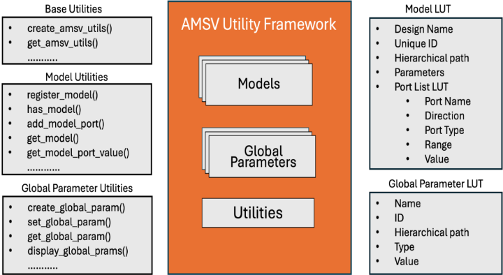
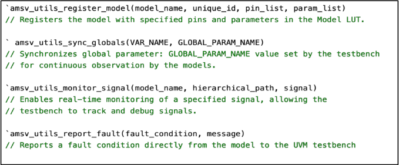
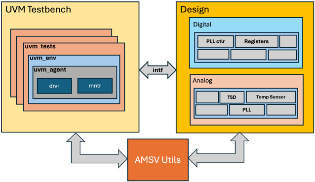
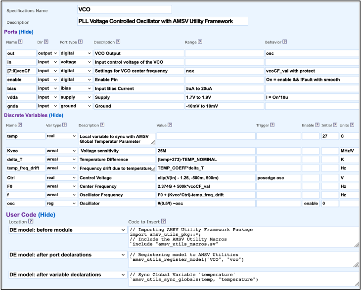
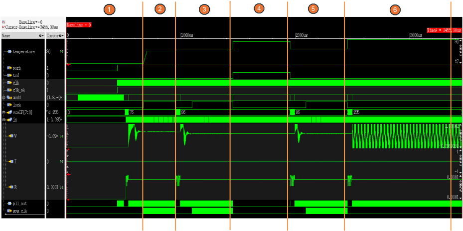

通过为模拟模型开发 UVM 框架应对高级混合信号验证场景
论文针对混合信号 SoC 验证的痛点：模拟设计与数模接口 bug 是 costly respin 的主因，而晶体管级仿真过慢、传统 SystemVerilog/UVM 数字平台又缺乏对模拟模型进行监控、参数控制与故障注入的能力。作者提出 AMSV utility framework，以 SystemVerilog package 形式提供 OOP 类、model LUT、global parameter LUT、utility 方法与预定义宏，在不改动模型端口列表（以保持 MVS 检查与 netlist 所需引脚精度）的前提下，为模拟行为模型增加参数同步、实时监测与故障上报通道，并通过 singleton 与 uvm_config_db 集成进 UVM 平台。模型由 MiM 工具生成，基于 SystemVerilog user-defined nettype 方法，AMSV 宏经 user code 容器批量注入多个模型。在含 PLL 与 thermal shutdown（TSD）的 SoC 案例中完成温度漂移补偿与 TSD 失效注入等 6 个场景验证，整个仿真约 2 分钟完成，远快于晶体管级仿真。对团队而言，其 UVM 框架封装与可复用验证 utility 的设计模式具有借鉴价值。
混合信号 IC 中，模拟设计问题与数模接口 bug 是导致昂贵 respin 的两大主因。验证温度引起的 PLL 频率漂移、thermal shutdown 等安全机制时，晶体管级仿真精度高但速度不可接受，且 testbench 无法直接控制环境条件；传统 SystemVerilog/UVM 系统级平台缺乏对模拟模型进行监控、控制和交互的能力，难以在系统级验证温度效应、参数变化、故障条件等真实场景。
提出 AMSV utility framework：一个 SystemVerilog package，包含 OOP 类、model LUT（登记模型、端口信息与配置参数，支持 block-level fault 上报）、global parameter LUT（集中管理 temperature、参考电压、失效机制等系统级参数）、utility 方法与预定义宏（模型注册、全局参数同步、信号监测、故障上报）。关键工程约束是控制/观测端口不能加入模型端口列表，否则破坏 MVS 检查与 netlist 所需的引脚精度，因此用独立框架机制实现。UVM 侧通过 create_amsv_utils 创建 singleton 并经 uvm_config_db 分发，在 build_phase/run_phase 动态创建和修改全局参数（如 temperature、tsd_force_fail）。模拟模型由 MiM 工具从 spec 生成，采用 SystemVerilog discrete electrical（user-defined nettype）方法，AMSV 宏通过 MiM 的 user code 容器批量嵌入模型。
含 6 个测试场景（温度从 27°C 逐步扫描至 90°C、TSD 触发与强制失效）的整个系统级仿真约 2 分钟完成，论文称传统晶体管级仿真在同等条件下无法达到该性能
测试用例验证了：PLL 在升温至 60°C 过程中保持锁定、65°C 时通过 vcocf 控制补偿频率漂移、85°C 时 TSD 触发关断、降温至 65°C 后 250us 内重新锁定，以及强制 TSD 失效后系统在 90°C 下的安全响应
覆盖率提升、bug 检出数量、与既有流程的量化对比等指标：未在论文中说明
相对作者此前工作（仅将基础模拟功能模型引入 chip 级验证环境以捕捉数字平台漏掉的 bug），AMSV 框架进一步提供动态参数控制、实时故障注入与模型到 testbench 的故障上报能力；并明确解决了一个关键约束：控制/观测通道必须独立于模型端口列表实现，以保持 MVS 检查与 netlist 所需的引脚精度。此外通过与 MiM 模型生成流程的 user code 容器集成，实现一次配置、多模型批量接入。
相关度级别：medium
命中能力域：2.4 设计验证方法学 | 2.7 EDA/验证自动化与 AI 辅助
理由：团队七域能力以数字 IP 的架构、RTL、验证与实现为主，论文的混合信号（PLL/TSD/PMU）验证场景并非团队产品线的代表性工程场景，上游 catalog 也标注无明显对应。但其核心技术手段——UVM testbench 框架扩展、可复用 SystemVerilog utility package、参数化故障注入与模型-testbench 通信机制——命中 2.4 的 UVM/SystemVerilog 验证平台技术与 2.7 的可复用验证 IP/验证自动化。团队若承担 LPDDR5X/HBM4/UCIe 等 PHY 中 PLL/DLL、温度传感器等模拟模块的系统级验证，该框架模式可直接借鉴，故评 medium 而非 high 或 low。
建议动作：作为方法参考存档
Simul Barua
Ulkasemi 公司（Ulkasemi Inc.）
美国加利福尼亚州库比蒂诺市 Stevens Creek 大道 20045 号 2B 室，邮编 95014
simul@ulkasemi.com
Shahriar Kabir
Ulkasemi 公司（Ulkasemi Inc.）
美国加利福尼亚州库比蒂诺市 Stevens Creek 大道 20045 号 2B 室，邮编 95014
shahriar@ulkasemi.com
Henry Chang
Designer's Guide 咨询公司（Designer's Guide Consulting, Inc.）
美国加利福尼亚州圣何塞市 Meridian 大道 3043 号 35 单元，邮编 95124
henry@designers-guide.com
摘要：随着人工智能（AI）、物联网（IoT）和汽车安全应用的兴起，集成电路（IC）设计中对可靠混合信号验证的需求已变得至关重要。日益增加的设计复杂度，尤其是在模拟与数字元件的接口处，常常导致验证缺口和代价高昂的重新流片（respin）。本文介绍模拟混合信号验证（AMSV）实用框架，该框架通过在通用验证方法学（UVM）环境中集成模拟行为模型来增强系统级测试平台。借助 SystemVerilog 的面向对象编程（OOP）能力，AMSV 框架可对模拟模型进行精确的监控与控制，从而实现对实际工况的准确仿真，包括温度效应、参数变化和子系统失效。通过详细的案例研究，我们展示了该框架应对先进应用验证需求的能力，显著提升了准确性与效率。仿真结果验证了该框架在提升 IC 可靠性方面的潜力，使其对新兴的高风险领域尤为适用。
集成电路（IC）验证的复杂性已显著增加，往往超过设计本身的复杂性。这一趋势在现代应用中尤为明显，例如人工智能（AI）、物联网（IoT）和汽车安全，这些应用都要求在模拟与数字两个领域内具备更高的可靠性和无缝的功能。因此，验证成功率有所下降，导致代价高昂的 IC 重流片（respin）增多 [1]。驱动这些重流片的两个重要因素是模拟设计中的问题和混合信号接口中的缺陷，而混合信号接口是现代设计中的关键组成部分。我们此前的研究 [2] 通过将基本的模拟功能模型纳入芯片级验证环境来应对这些挑战，展示了这些模型如何增强系统级验证，从而捕获在传统的以数字为中心的测试平台中原本会逃过检测的缺陷。
尽管取得了这些进展，传统的验证方法学仍然缺乏应对更复杂系统需求所需的稳健性。随着 IC 设计复杂性的不断演进，我们必须考虑系统性能、安全性以及其他更复杂的场景，而这些正是一个需要包含模拟元件的数字孪生（digital twin）必须应对的内容。就性能而言，这可能涉及仿真温度效应或模块非理想性的参数变化对整个系统的影响。就安全性而言，这可能意味着对模拟模块、子系统和系统如何以特定方式失效进行建模。
这正是模拟模型展现其真正价值之处。与晶体管级仿真相比，模型不仅能以可行的速度进行仿真，还能以直接的方式纳入环境应力因素和参数漂移等复杂效应。这些模拟模型的潜力巨大，可提供更大的灵活性，支持对复杂现实场景的建模与仿真，并允许进行更广泛的系统评估，例如评估当关键模拟元件退化或失效时 AI 算法的表现。
然而，要充分利用这些增强的模拟模型，广泛采用 SystemVerilog 和/或通用验证方法学（UVM）开发的传统系统级测试平台也必须随之演进。它们需要更强的监控、控制模拟模型以及与模拟模型交互的能力，从而支持在先进的实际工况条件下进行验证。
本文介绍了模拟混合信号验证（AMSV）实用框架，该框架利用 SystemVerilog 面向对象编程（OOP）构造来增强模拟模型和系统级测试平台。AMSV 实用框架不仅仅是解决重流片（respin）问题；它还能够对温度效应、参数变化、失效条件、模拟损伤以及其他复杂场景等实际工况进行精确的建模与仿真。因此，它使得对系统性能与安全性的评估更加全面。
传统上，对环境效应的仿真需要缓慢的晶体管级仿真，这类仿真虽然能提供精度，但对于系统级验证并不实用，而且无法从测试平台对环境影响进行直接控制。这一局限使得验证关键特性颇具挑战，例如系统对锁相环（Phase Locked Loop, PLL）因温度引起的频率漂移的响应，或者热关断等安全机制的鲁棒性。此外，在晶体管级验证安全条件是出了名地困难，而设计系统级测试以有意诱发可预测的失效，只有在设计本身即能容纳故障条件的情况下才有可能实现。这些局限凸显了对一种更灵活、更高效的验证方法的需求，该方法应能够无缝地处理复杂的混合信号场景。
我们将要介绍的 AMSV 实用框架通过使模拟模型能够融入真实世界的行为来应对这些挑战。此外，该框架使通用验证方法学（UVM）测试平台能够动态地设置和调整参数，提供对环境条件和故障场景的实时控制与监测，从而有效验证这些特性，并确保系统对诸如频率调整或安全反应等变化的响应准确而可靠。
AMSV 框架还通过使模块级模拟模型能够直接向 UVM 测试平台报告故障，促进了持续的故障检测。这一能力增强了故障检测与调试，使验证团队能够全面测试关键行为——从环境耐受性到安全机制——并显著推进对当今复杂系统的全芯片验证。
本质上，除系统中各模块的输入/输出端口之外，所需要的是一组可能为双向的端口，它们接入模块的模型（而非原理图），既可以用于控制模型，也可以从中进行面向验证目的的观测。这些附加端口不能被添加到模型的端口列表中，因为那样会使模型的引脚精度失效，而模型与原理图对比（MVS）检查 [3] 以及网表生成都需要这种引脚精度。因此，必须为这些端口引入一种单独的机制。这正是 AMSV 框架发挥作用之处。
在后续章节中，我们将深入探讨该框架的细节，并展示它如何同时增强模拟模型与系统级测试平台，最终改进对当今复杂混合信号设计的系统级验证。
AMSV 实用框架以 SystemVerilog 软件包的形式构建，其中包含面向对象编程（OOP）类、查找表（LUT）、预定义宏以及其他专用实用程序。这种模块化设计可与模拟模型和 UVM 测试平台无缝集成，支持动态参数控制、实时故障注入，以及模拟模型与验证环境之间的高效通信。图 1 展示了该框架的架构，重点突出了核心组件：模型 LUT 与全局参数 LUT，以及用于辅助组件通信与管理的实用方法。

模型 LUT 包含针对每个模拟模型的一整套配置设置和参数。该表包含基本信息，例如模型列表、端口详情（包括方向、类型及其他设置）以及配置参数。此外，模型 LUT 还支持跨模型访问框架的全局变量，从而简化参数管理并确保系统级设置的一致性。
这种结构使模拟模型能够直接向 UVM 测试平台报告输入范围故障，从而快速检测偏离预期工作条件的情况。凭借监测模块级引脚值和跟踪关键指标的能力，模型 LUT 在实时模型调整和故障报告方面发挥着重要作用，对于验证复杂的混合信号行为至关重要。
全局参数 LUT 作为集中式资源，用于存储影响多个模型或整个验证环境的参数。它充当环境变量和系统级设置的统一来源。典型条目包括温度、参考电压、模块失效机制以及其他关键参数。
全局参数 LUT 支持来自测试平台的无缝访问和实时更新，使 UVM 环境能够根据需要动态影响模型行为。测试平台和模拟模型均可访问该 LUT，从而确保参数在整个验证环境中的一致应用。这种结构保证了关键条件得到统一维护，有助于对复杂混合信号交互进行可靠验证。
AMSV 框架包含一套实用方法，这些方法建立了 UVM 测试平台与模拟模型之间的主要通信通道。这些方法为模型管理、全局参数控制和信号监测提供了必备工具，使该框架能够高度适应各种验证场景。
图2概述了AMSV工具框架的结构，说明了主类如何组织核心组件，包括查找表和工具函数。
AMSV包旨在封装模型和全局参数查找表（LUT），同时提供工具函数以简化模型与测试平台之间的通信。
package amsv_utils_pkg; // 模型LUT类
model_utilities; // 全局参数LUT类
global_utilities; // 包的其他辅助信号
// AMSV工具框架的基类
class amsv_utilities;
// AMSV工具单例类
static amsv_utilities amsv_utils = null;
// 包含模型细节的查找表
model_utilities models[string];
// 用于全局变量的查找表
global_utilities globals[string];
// 工具
// 私有构造函数，防止直接实例化
extern protected function new(string name);
// 创建AMSV工具实例
extern static function amsv_utilities create_amsv_utils(string name);
// 获取AMSV工具实例
extern static function amsv_utilities get_amsv_utils();
// 模型LUT工具
// 以名称、唯一ID和层次结构在查找表中注册模拟模型
extern function void register_model(string name = "", string id = "", string hier = "");
// 当模型存在且具有提供的唯一ID时返回1
extern function bit has_model(string id);
// 添加已注册模型的端口信息
extern function void add_model_port(string id, string name, string dir, string port_type);
// 基于唯一ID返回模型工具
extern function model_utilities get_model(string id);
// 根据唯一模型ID和端口名返回模型的端口描述
extern function port_t get_model_port(string id, string port_name);
// 全局参数工具
// 使用名称、数据类型和值创建全局变量
extern function void create_global_param(string name = "", string data_type = "", real value);
// 在运行期间设置全局值
extern function void set_global_param(string name, real value);
// 返回所提供名称的全局值
extern function real get_global_param(string name);
// 当所提供名称的全局值存在时返回1
extern function bit has_global_param(string name);
// 显示工具
endclass
endpackage
AMSV 框架还包含一组预定义的实用宏，旨在简化集成并管理各种操作。这些宏最大限度地减少了重复代码的编写，确保模拟模型与验证环境中使用方式的一致性，并降低代码复杂度，使框架更易于使用且更加高效。
AMSV 框架提供的关键宏包括：
图 3 展示了 AMSV 框架中一些关键宏定义的示例。虽然仅展示了定义部分，但它们说明了这些宏如何支持框架内的精简操作。

这些宏定义说明了 AMSV 框架如何简化模型注册、全局参数同步、信号监测和故障报告等任务。通过使用这些宏，建模团队和验证团队都可以快速配置 AMSV 框架，并专注于验证那些依赖层次化引用或固定测试平台名称的传统设置往往难以处理的复杂行为。这种方法节省了时间，并使验证过程更加高效、可靠。
在下一节中，我们将考察一些案例研究，展示 AMSV 框架在实际验证场景中的应用，说明其各个组件如何提升系统级混合信号验证的准确性和效率。
IV. 案例研究：AMSV 实用框架在混合信号系统设计中的应用
在本节中，我们通过一个包含数字和模拟组件的片上系统（System-on-Chip, SoC）示例设计来演示 AMSV 框架的应用。我们的主要目标是展示如何将该框架与模拟模型以及系统级 UVM 测试平台相集成，以及这种集成如何实现对复杂场景的验证。
该示例设计包含关键的混合信号模块，具体包括电源管理单元（power management unit）和锁相环（PLL）。AMSV 框架被用于建模环境因素（尤其是温度）对这些模拟组件的影响，从而能够在不同条件下对系统级响应进行更全面的验证。
该设计中的 PLL 模块对温度波动敏感，温度波动会导致其工作频率偏离预期值。这一频率偏差由数字子系统中的一个控制单元进行监测，该控制单元会动态调整 PLL 以维持其期望频率。此外，该设计还包含一个温度监测与热关断（TSD）模块，负责监控系统温度。当温度超过工作阈值时，TSD 模块会关闭系统，以防止过热和灾难性故障。
借助 AMSV 框架，我们对 PLL 上的温度效应进行建模，以验证控制单元是否能够恰当地补偿由温度升高引起的频率漂移。此外，为了评估系统对安全机制的响应，我们利用该框架在热关断模块中引入了一种故障机制。该模拟故障会阻止 TSD 模块触发，即使温度已升至安全限值以上。这使我们能够分析系统在潜在危害安全的条件下如何作出反应。
AMSV 框架通过将这些复杂场景集成到 UVM 测试平台中，为其验证提供了便利。我们将描述如何配置温度等参数，以及如何直接从 UVM 测试平台触发 TSD 故障机制。随后，我们将展示为验证这些安全与性能特性而开发的具体测试用例。图 4 给出了验证环境的框图，展示了被测设计（包括数字模块和模拟模型），并突出了 AMSV 实用框架作为模型与测试平台之间接口的作用。后续章节将详细讨论 AMSV 框架如何被融入模拟模型和 UVM 测试平台，以及为验证这些复杂场景而开发的具体测试用例。

我们采用 SystemVerilog 离散电气（discrete electrical，也称为用户自定义 nettype）方法为模拟子系统开发了功能完备的模型。这些模型由 Model-in-Minutes（MiM）工具 [4] 生成，该工具能够根据规格说明分别生成 Verilog-AMS 形式的模拟混合信号（analog mixed-signal，AMS）模型和 SystemVerilog 形式的离散混合信号（discrete mixed signal，DMS）模型，以及针对模拟模块的自校验模型-原理图（model-versus-schematic，MVS）测试平台。MiM 允许将自定义用户代码并入模型容器（即项目内所有模型继承的共享设置）。这一特性对于将 AMSV 实用框架集成到多个模型中而无需单独修改每个规格说明尤为有益。
图 5 展示了用于构建 PLL 压控振荡器（Voltage Controlled Oscillator，VCO）的 MiM 规格说明，具体建模了系统温度如何影响其行为。通过利用 MiM 的用户代码部分，我们将必要的宏直接嵌入到生成的模型中，从而集成了 AMSV 框架。

图 6 展示了由该 MiM 规格说明创建的模型，重点突出了 AMSV 实用宏的引入。`amsv_utils_register_model 宏通过提供设计名称和唯一标识符，将该模型注册到框架的 Model LUT 中。为了使模型与存储在 Global LUT 中的全局温度参数保持同步，我们使用了 `amsv_utils_sync_global 宏，并指定内部变量 temp 来存储全局温度值。
该代码还展示了 MiM 基于图 5 所示端口表中 range 列生成的块级断言。当输入值偏离正常工作条件时，这些断言会检测并报告块级故障。借助 AMSV 实用框架，这些关键的块级断言可以直接报告给系统级测试平台，从而便于调试并在设计早期发现缺陷。
为了测试安全关键场景，我们利用 AMSV 实用框架在热关断（thermal shutdown，TSD）模型中集成了一种故障机制。该框架利用 `amsv_utils_sync_globals 宏与名为 tsd_force_fail 的全局参数进行同步。通过将全局参数 tsd_force_fail 与 TSD 模型相关联，我们可以直接从测试平台覆盖 TSD 的默认行为。当 tsd_force_fail 被使能时，即使温度上升，TSD 也会绕过其正常的关断响应。图 7 展示了在 TSD 模型中实现该故障机制的代码。
timescale 1s/1ps // 导入 AMSV 实用框架包 import amsv_utils_pkg::*; // 包含 AMSV 实用宏 `include "amsv_utils_macros.sv" // 模块头 {{{1 module VCO ( output out, // VCO 输出 input in, // VCO 的输入控制电压 input[7:0] vcoCF, // VCO 中心频率设置 input enable, // 使能引脚 input bias, // 偏置输入 input vdda, //电源 input gnda // 地 ); // 将模型注册到 AMSV 实用程序 amsv_utils_register_model("VC0", "vco") // 离散-电气（DE）收发器 {{{2 real in$Vobs, in$Iobs, in$Idrv, in$Gdrv; DE_norton Xtcvr_in (in, in$Vobs, in$Iobs, in$Idrv, in$Gdrv); [l t rlt t l real temp = 27; // 将 temp 变量与全局参数 'temperature' 同步 amsv_utils_sync_globals(temp, "temperature") // 离散变量 {{{2 assign Kvco = 25e6; assign delta_T = (temp + 273) - TEMP_NOMINAL; assign temp_freq_drift = TEMP_COEFF*delta_T; always @(posedge osc) Ctrl <= min(max(in$Vobs - 1.25+0, -500e-3+0), 500e-3+0); assign F0 = 2.374e9 + 500e3*vcoCF_val; assign f = F0 + (Kvco*Ctrl) - temp_freq_drift; always wait (On) osc = #(^fromSeconds(max(500e-3/f, `TIME_PREC))) ~osc; // 端口驱动 {{{2 assign out = osc; // 断言 {{{1 // 检查 V(vdda) 是否超出范围（1.7V 至 1.9V） {{{2 assign #(`fromSeconds(25e-9), 0) _faults.V_vdda = !(( (1.7 <= vdda$Vobs) && (vdda$Vobs <= 1.9)) ||!_locals.enableAsserts); always @(_faults.V_vdda) _reportFault(_faults.V_vdda, "V(vdda) out of range"); assign _FaultOnInput = _faults.V_vdda; endmodule
`timescale 1s/1ps // 导入 AMSV 实用包和宏 import amsv_utils_pkg::*; `include "amsv_macros.sv" // 模块声明 module TSD( tsd, trim, enable, por_b, i_ptat, Vvdda epub ); 11 参数 // 端口类型与声明 // 将模型注册到 AMSV 实用程序 amsv_utils_register("TSD", "PLL-TSD") // 与全局变量 tsd_force_fail 同步 amsv_utils_sync_globals(tsd_force_fail, "tsd_force_fail") // 离散行为 // 由 i_ptat 计算温度 // 驱动 TSD // 若 tsd_force_fail = 1，则将输出置为 0 assign tsd = (tsd_force_fail==0) ? tsd_reg : 0; // 模拟断言 endmodule
为了在通用验证方法学（UVM）测试平台中启用模拟混合信号验证（AMSV）实用工具，我们首先将 amsv_utils_pkg 导入测试平台顶层，并使用该包中提供的 create_amsv_utils 方法创建 AMSV 实用工具类的单例实例。随后，通过 UVM 配置数据库对该单例实例进行设置，即可在整个 UVM 测试平台中访问该实例。借助这一设置，UVM 测试平台能够充分运用 AMSV 实用工具方法，从而生成以往采用传统方法难以复现的真实场景。图 8 展示了用于将该框架集成到 UVM 测试平台顶层并通过 UVM 配置数据库对其进行配置的代码。
import uvm_pkg::*; // 导入 amsv_utils 包及宏 import amsv_utils_pkg::*; `include "amsv_utils_macros.sv" module tb_top_ahb; // PLL DUT 实例 pll_top DUT_top (...); initial begin // 创建 amsv 单例实例 amsv_utilities amsv_utils = amsv_utilities::create_amsv_utils("top"); // 在 uvm 测试平台环境中设置 amsv 实例 uvm_config_db#(amsv_utilities)::set(null, "*", "amsv_utils", amsv_utils); run_test(); end endmodule
一旦在测试用例中能够访问 AMSV 实用工具对象（通过 build_phase 内部的配置数据库），便可用它来初始化影响模型行为的参数。在图 9 所示的代码中，我们初始化了名为 temperature 的全局参数，并定义了名为 tsd_force_fail 的变量，用于模拟 TSD 模块在临界条件下的失效，从而使我们能够验证系统对极端场景的响应。
class pll_test extends uvm_test; uvm_component_utils(pll_test) virtual function void build_phase( uvm_phase phase); // 从 tb_top 获取 AMSV 实用工具 if(!uvm_config_db #(amsv_utilities)::get(this,"","amsv_utils",amsv_utils)) begin uvm_fatal("AMSV utilites","AMSV utility is not found") end endfunction virtual function void connect_phase( uvm_phase phase); // 创建全局参数 amsv_utils.create_global_param("temperature", "real", 27.0); amsv_utils.create_global_param("tsd_force_fail", "bit", 0); endfunction task run_phase(uvm_phase phase); endtask endclass
下一节将利用图 9 所示的已初始化参数，探讨借助 AMSV 实用工具框架得以实现的若干关键验证场景。
我们对 PLL 施加了若干测试用例，以便在 AMSV 实用工具框架所设定的各种条件下对其进行全面评估。
图 10 展示了这些测试用例在 UVM 测试用例代码的 run_phase 中的实现，重点说明了如何针对每个场景调整框架的全局参数，以评估系统对各种变化条件的响应。
class pll_test extends uvm_test; task run_phase(uvm_phase phase); super.run_phase(phase); phase.raise_objection(this); // Starting the simulation with nominal temperature amsv_utils.set_global_value("temp", 27) // Wait for the power-up sequence to finish // Check if the PLL lock interrupt is high within 250us check_pll_lock_time(250e-6); // Vary the temperature to 60C and check the PLL is still locked for (real r=27; r <= 60; r=r+1 ) begin amsv_utils.set_global_value("temp", r); #1us; check_pll_lock_time(0); end #250us; // Setting temperature to 65C and check if the system adjust // the vcōCF control to get the desired frequency amsv_utils.set_global_value("temp", 65); check_vcocf_register(.temp(65)); check_pll_lock_time(250e-6); // Setting temperature to 85 C and check if the TSD is activated amsv_utils.set_global_value("temp", 85); check_tsd(1); // Check if TSD is disabled once Temp is lowered to 65C // and if PLL becomes locked within 250us amsv_utils.set_global_value("temp", 65); check_tsd(0); check_pll_lock_time(250e-6); // Forcing TSD to fail through global params // and setting temperature to 90C and check if // the design has any safety mechanisms for TSD failure amsv_utils.set_global_value("tsd_force_fail", 1); #1us; amsv_utils.set_global_value("temp", 90); check_tsd(0); check_vcocf_register(.temp(90)); check_pll_lock_time(250e-6); phase.drop_objection(this); endtask endclass
基于上述测试用例场景，我们可以观察系统对温度变化以及由 AMSV Utility 框架所启用的安全条件的响应。图 11 展示了仿真波形，并附有标注以说明对应测试用例 1 至 6 的结果。每处标注对应一个独立的场景，突出显示了诸如 PLL 锁定状态、温度变化、TSD 激活以及系统恢复等关键观察点，直观地呈现了系统在各测试条件下的响应。
以下结果揭示了设计在各测试用例场景下的行为表现：

总体而言，这些观察结果证明了 AMSV Utility 框架模拟多样环境条件和故障场景的能力，为理解系统行为与鲁棒性提供了宝贵的洞察。整个仿真在大约两分钟内完成——相较于传统晶体管级仿真是显著的改进，后者在同等条件下无法达到这样的性能。此外，传统测试平台（testbench）通常缺乏对诸如温度突变和故障条件等动态场景的控制，使得实时验证复杂交互与安全机制变得颇具挑战。
本文提出了 AMSV Utility 框架，作为应对现代集成电路（IC）设计中混合信号验证挑战的一种创新方法。通过将模拟模型与通用验证方法学（UVM）测试平台集成，该框架实现了传统方法此前无法达到的高效系统级验证。
通过这些测试用例，我们展示了该框架模拟复杂真实场景的能力，例如温度波动、环境的突然变化以及故障条件，而整个仿真时间仅约两分钟。这些能力凸显了 AMSV Utility 框架克服晶体管级仿真和传统测试平台局限性的能力，后者缺乏处理此类复杂条件所需的灵活性和速度。
除所展示的场景之外，AMSV Utility 框架还提供了其他有价值的应用。它为验证混合信号连接性提供了稳健的解决方案，确保模拟组件与数字组件之间可靠的交互。借助实时监控和对模块级信号（block-level signals）的直接访问，验证团队可以开发系统级断言（assertion）并提升模拟设计的覆盖率。这种在连接性验证、断言开发和详细覆盖率度量方面的能力，使 AMSV 框架成为一个超越传统验证环境的多功能工具。
AMSV Utility 框架通过支持直接的参数控制和实时观测，弥合了关键差距，减少了长期制约传统环境的种种限制。它能够复现复杂的环境场景并与系统参数动态交互，为混合信号验证在效率、准确性和完整性方面树立了新的标准。随着 IC 设计复杂度的持续增长，该框架提供了一种可扩展、可适应的解决方案，能够跟上不断演进的验证需求，使其成为开发汽车安全、物联网（IoT）以及 AI 驱动系统等领域的先进应用时的宝贵资产。
总而言之，AMSV Utility 框架代表了混合信号验证领域的重大进展，为工程师提供了满足当今验证需求所需的工具，并为未来的创新奠定了基础。该框架未来的扩展可能包括扩充模型库和增强实用功能，从而进一步巩固其在验证流程中的作用。